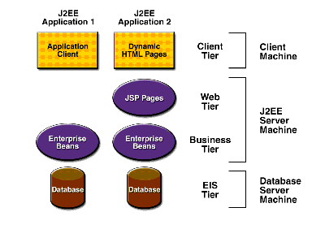
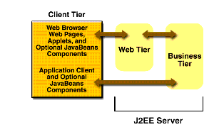
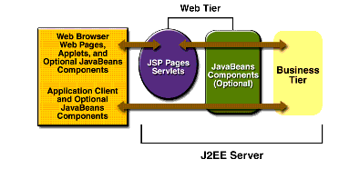
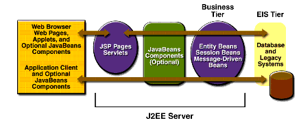

www.netbeans.org
Feedback
java.sun.com
|
Download
www.netbeans.org |
|
API
Feedback java.sun.com |
Distributed Multitiered Applications
The J2EE platform uses a distributed multitiered application model for enterprise applications. Application logic is divided into components according to function, and the various application components that make up a J2EE application are installed on different machines depending on the tier in the multitiered J2EE environment to which the application component belongs. Figure 1-1 shows two multitiered J2EE applications divided into the tiers described in the following list. The J2EE application parts shown in Figure 1-1 are presented in J2EE Components.
Although a J2EE application can consist of the three or four tiers shown in Figure 1-1, J2EE multitiered applications are generally considered to be three-tiered applications because they are distributed over three locations: client machines, the J2EE server machine, and the database or legacy machines at the back end. Three-tiered applications that run in this way extend the standard two-tiered client and server model by placing a multithreaded application server between the client application and back-end storage.

Figure 1-1 Multitiered Applications
J2EE Components
J2EE applications are made up of components. A J2EE component is a self-contained functional software unit that is assembled into a J2EE application with its related classes and files and that communicates with other components. The J2EE specification defines the following J2EE components:
J2EE components are written in the Java programming language and are compiled in the same way as any program in the language. The difference between J2EE components and "standard" Java classes is that J2EE components are assembled into a J2EE application, are verified to be well formed and in compliance with the J2EE specification, and are deployed to production, where they are run and managed by the J2EE server.
J2EE Clients
A J2EE client can be a web client or an application client.
Web Clients
A web client consists of two parts: (1) dynamic web pages containing various types of markup language (HTML, XML, and so on), which are generated by web components running in the web tier, and (2) a web browser, which renders the pages received from the server.
A web client is sometimes called a thin client. Thin clients usually do not query databases, execute complex business rules, or connect to legacy applications. When you use a thin client, such heavyweight operations are off-loaded to enterprise beans executing on the J2EE server, where they can leverage the security, speed, services, and reliability of J2EE server-side technologies.
Applets
A web page received from the web tier can include an embedded applet. An applet is a small client application written in the Java programming language that executes in the Java virtual machine installed in the web browser. However, client systems will likely need the Java Plug-in and possibly a security policy file in order for the applet to successfully execute in the web browser.
Web components are the preferred API for creating a web client program because no plug-ins or security policy files are needed on the client systems. Also, web components enable cleaner and more modular application design because they provide a way to separate applications programming from web page design. Personnel involved in web page design thus do not need to understand Java programming language syntax to do their jobs.
Application Clients
An application client runs on a client machine and provides a way for users to handle tasks that require a richer user interface than can be provided by a markup language. It typically has a graphical user interface (GUI) created from the Swing or the Abstract Window Toolkit (AWT) API, but a command-line interface is certainly possible.
Application clients directly access enterprise beans running in the business tier. However, if application requirements warrant it, an application client can open an HTTP connection to establish communication with a servlet running in the web tier.
The JavaBeans
Component Architecture
The server and client tiers might also include components based on the JavaBeans component architecture (JavaBeans components) to manage the data flow between an application client or applet and components running on the J2EE server, or between server components and a database. JavaBeans components are not considered J2EE components by the J2EE specification.
JavaBeans components have properties and have
getandsetmethods for accessing the properties. JavaBeans components used in this way are typically simple in design and implementation but should conform to the naming and design conventions outlined in the JavaBeans component architecture.J2EE Server Communications
Figure 1-2 shows the various elements that can make up the client tier. The client communicates with the business tier running on the J2EE server either directly or, as in the case of a client running in a browser, by going through JSP pages or servlets running in the web tier.
Your J2EE application uses a thin browser-based client or thick application client. In deciding which one to use, you should be aware of the trade-offs between keeping functionality on the client and close to the user (thick client) and off-loading as much functionality as possible to the server (thin client). The more functionality you off-load to the server, the easier it is to distribute, deploy, and manage the application; however, keeping more functionality on the client can make for a better perceived user experience.

Figure 1-2 Server Communications
Web Components
J2EE web components are either servlets or pages created using JSP technology (JSP pages). Servlets are Java programming language classes that dynamically process requests and construct responses. JSP pages are text-based documents that execute as servlets but allow a more natural approach to creating static content.
Static HTML pages and applets are bundled with web components during application assembly but are not considered web components by the J2EE specification. Server-side utility classes can also be bundled with web components and, like HTML pages, are not considered web components.
As shown in Figure 1-3, the web tier, like the client tier, might include a JavaBeans component to manage the user input and send that input to enterprise beans running in the business tier for processing.
Business Components
Business code, which is logic that solves or meets the needs of a particular business domain such as banking, retail, or finance, is handled by enterprise beans running in the business tier. Figure 1-4 shows how an enterprise bean receives data from client programs, processes it (if necessary), and sends it to the enterprise information system tier for storage. An enterprise bean also retrieves data from storage, processes it (if necessary), and sends it back to the client program.

Figure 1-3 Web Tier and J2EE Applications

Figure 1-4 Business and EIS Tiers
There are three kinds of enterprise beans: session beans, entity beans, and message-driven beans. A session bean represents a transient conversation with a client. When the client finishes executing, the session bean and its data are gone. In contrast, an entity bean represents persistent data stored in one row of a database table. If the client terminates or if the server shuts down, the underlying services ensure that the entity bean data is saved. A message-driven bean combines features of a session bean and a Java Message Service (JMS) message listener, allowing a business component to receive JMS messages asynchronously.
Enterprise Information System Tier
The enterprise information system tier handles EIS software and includes enterprise infrastructure systems such as enterprise resource planning (ERP), mainframe transaction processing, database systems, and other legacy information systems. For example, J2EE application components might need access to enterprise information systems for database connectivity.
|
Download
www.netbeans.org |
|
API
Feedback java.sun.com |
All of the material in The J2EE(TM) 1.4 Tutorial is copyright-protected and may not be published in other works without express written permission from Sun Microsystems.